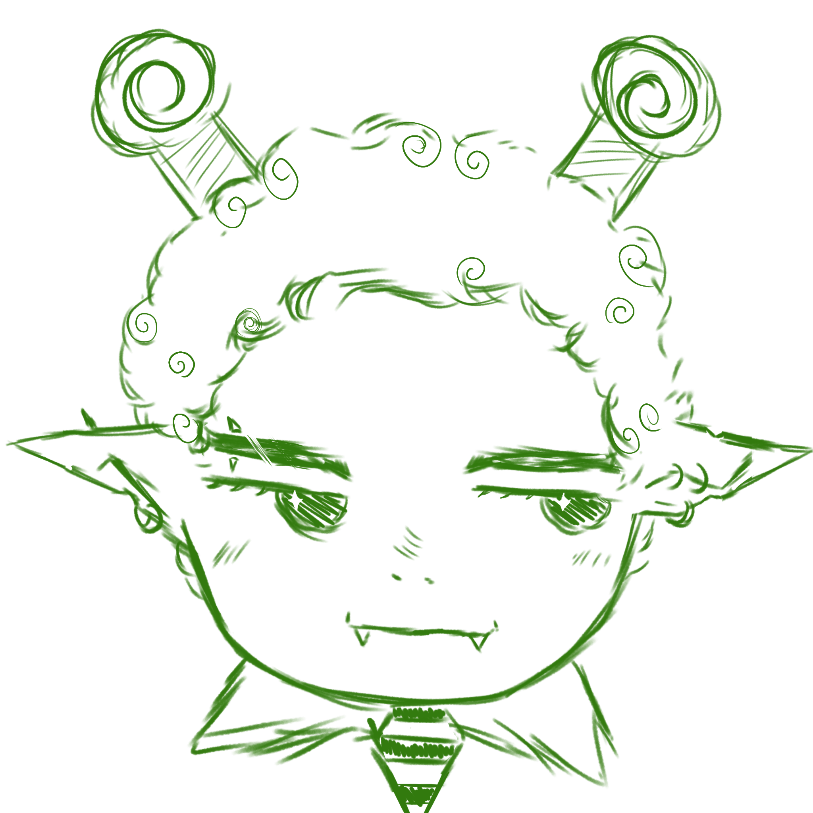

Desenvolvedor Full Stack
Cesar Batista (Caesar Kairos) — estudante de Desenvolvimento de Sistemas e desenvolvedor Full Stack, com experiência em frontend, backend, APIs, bancos de dados e integração entre serviços e tecnologias.
Quem sou
Meu interesse por programação começou através de vídeos na Internet. O que inicialmente parecia apenas uma área interessante acabou se tornando uma forma de criar coisas que, antes de existirem, eram apenas ideias. Hoje sou estudante de Desenvolvimento de Sistemas e desenvolvedor Full Stack — movido pelo prazer de transformar ideias em algo que realmente funciona, do primeiro código até uma aplicação que possa ser utilizada por alguém.
Apesar de atuar em uma área de exatas, me considero profundamente ligado às humanas. Escrevo livros e histórias, tenho interesse por psicologia, arte, cinema, literatura e mitologia. Acredito que tecnologia deve ser acessível — não só no uso, mas no conhecimento para compreendê-la. Com o avanço da inteligência artificial, essa possibilidade de transformar ideias em ferramentas está se tornando cada vez mais real.
Gosto muito de cinema, especialmente de filmes que provavelmente passariam despercebidos em qualquer outra circunstância. Também gosto de jogos 2D, como OneShot, e de Minecraft — mesmo sem nunca ter chegado a zerá-lo. Amo a cor verde e aliens estereotipados do cinema: para mim, eles são um exemplo de como a arte molda a percepção coletiva. Uma representação criada décadas atrás que continua definindo o que imaginamos quando pensamos em algo que sequer sabemos se existe.
Quero ser alguém a quem outras pessoas possam recorrer quando precisarem de ajuda — em desenvolvimento, na escrita ou na arte. Da mesma forma que comunidades tornaram possível que eu chegasse até aqui, quero poder compartilhar esse caminho. Mais do que acumular conhecimento, quero ser capaz de transmiti-lo.
O que construí
Biblioteca Inteligente
Sistema para gerenciamento de bibliotecas físicas escolares, reunindo acervo, circulação, leitores, agenda e gestão em uma aplicação desktop com acesso complementar pelo navegador.
Música → Filme
Recomendador que transforma a vibe de uma a três músicas em cinema, combinando análise emocional, busca vetorial e um catálogo próprio de filmes.
Seu gosto cinematográfico será julgado
Experiência interativa que transforma o export de uma conta do Letterboxd em um julgamento cinematográfico personalizado, usando os próprios padrões da conta como evidência.
Próximo projeto
Em breve
Ferramentas e saberes
Escrita e reflexão